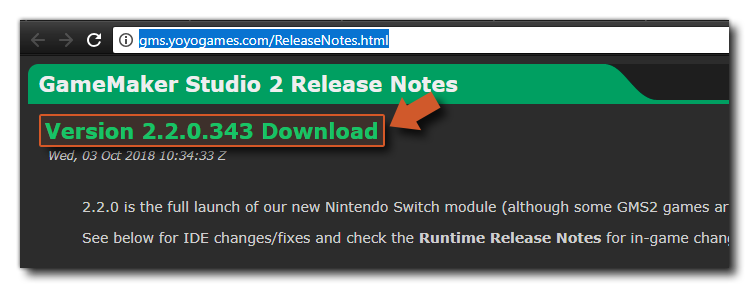

La página de Preferencias del canal Beta es donde puede optar por optar al Canal Beta de GameMaker Studio 2. El hecho de participar en el canal beta significa que se le recomendará actualizar GameMaker Studio 2 cuando se GameMaker Studio 2 una nueva versión beta del producto, y no solo cuando haya una actualización estable disponible. La versión beta del producto es una versión candidata de lanzamiento que aún se está probando, y como tal puede contener errores que afectarán su proyecto. Por lo tanto, antes de optar a la versión beta de GameMaker Studio 2, se recomienda que realice una copia de seguridad de su proyecto utilizando algún tipo de control de origen y luego trabaje en una copia / rama separada en la versión beta.
Antes de poder participar en el canal beta, debe tomarse un momento para revisar el Acuerdo de licencia de usuario final, específicamente la Sección 2, y luego se le pedirá que verifique las dos opciones presentadas, confirmando que está al tanto de los riesgos y que ha respaldado su proyecto. Una vez que lo haya seleccionado, puede hacer clic en el botón Opt into the GameMaker Studio 2 Beta que le pedirá que reinicie GameMaker Studio 2. Cuando se reinicie, recibirá actualizaciones de la fuente del canal Beta (esto puede requerir que instale una versión beta del IDE si hay una disponible).
Una vez que haya optado por el canal Beta, el botón Preferencias ahora mostrará la opción Salir de la GameMaker beta de GameMaker Studio 2. Cuando haga clic en esto, se le pedirá que vaya a las Notas de la versión donde puede descargar una versión estable de GameMaker Studio 2 (haga clic en el encabezado de la versión de la que desea instalar): 
Tenga en cuenta que el canal Beta se compone de dos fuentes: el IDE y las fuentes en tiempo de ejecución. Si opta por la versión beta aquí, se le pedirá que instale el IDE Beta, y que a su vez también descargará e instalará cualquier tiempo de ejecución beta. Sin embargo, puede cambiar el tiempo de ejecución que está utilizando en cualquier momento desde las Preferencias de tiempo de ejecución (e incluso cambiar entre los tiempos de ejecución Beta y Master).